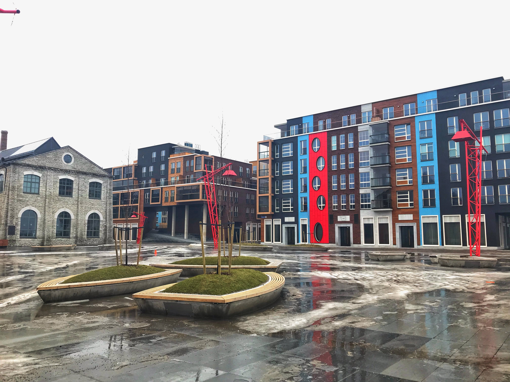
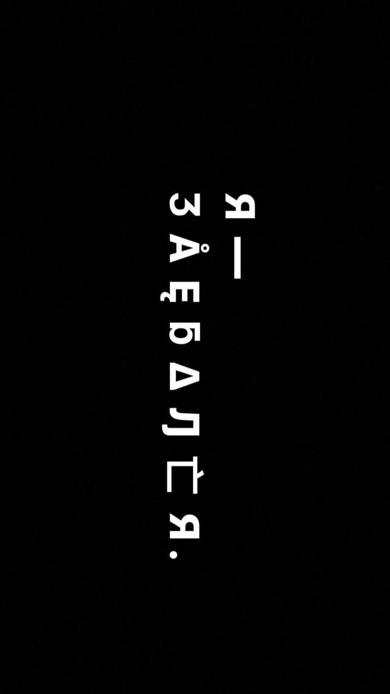

Мемориал жертвам коммунизма в Таллине
И тысячи падают в пыль дорог,
И тысячи мечутся вдоль дорог,
Сквозь муки, невзгоды, заботы
Находят знакомые соты.

В августе 2018 года в Таллине открыли мемориальный комплекс посвящённый жертвам советской оккупации Эстонии. За все время коммунистического режима было репрессивно около 50 тысяч человек, 22 тысячи было расстреляно или погибло в заключении. Каждый 5й житель Эстонии был так или иначе репрессирован.
Современная малоэтажная застройка
Это — типичные представители современной европейской малоэтажной застройки расположенные в районах Kalamaja в Таллине и Stara Praga в Варшаве
Районы прилегающие к центру, с хорошо развитой инфраструктурой, подземными парковками, парками и всем остальным, что нужно для комфортной жизни.
М Ы В С Ę M غ Ҷ Ƭ Å 卞 Ę Л И .
Честно